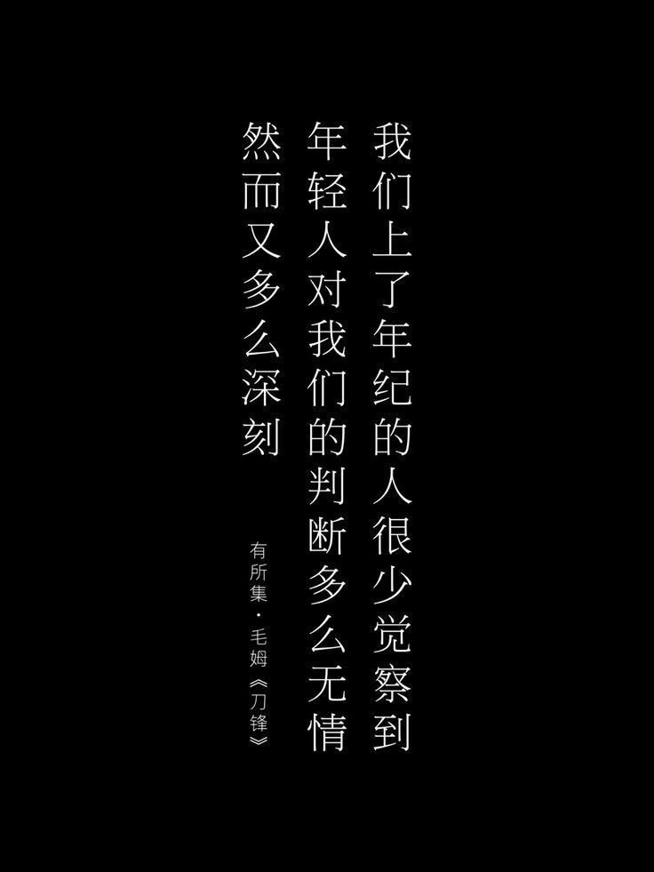

Scaramouche
Ato I
O protótipo de teste para estar no lugar da líder da nação do trovão. Físicamente inspirado em ambas
as suas criadoras, criado após a morte de Makoto, a marionete vinha como uma criação idealizada
dessa última. O objetivo em comum de atingir a eternidade. Infelizmente, para a arconte restante,
era visível como sua mais nova criação, seu filho, demonstrava emoções, e emoções eram inimigos da
eternidade tão desejada pela Xogum. Apenas cinco dias após conceber o projeto, ele foi abandonado
para apodrecer, pois seus sentimentos não tinham utilidade para a grande nação de Inazuma.
Às
margens do Pavilhão Shakkei, a marionete ainda aguardava sua criadora, na esperança que um dia
retornaria para lhe buscar. Essa espera perdurou por aproximadamente uma centena de anos, onde as
pétalas que caíam da grande árvore vermelha eram contadas pelo membro da família real. A
deterioração do lugar era inevitável, o tempo castigara a construção e sua passagem foi ficando cada
vez mais obstruída. Foi então que um explorador de ruínas, chamado Katsuragi, casualmente passava
pela região, quando encontrou o boneco dentro da mansão arruinada. O rapaz não possui nome,
expressões, muito menos vontades, tudo que restava em suas mãos era uma pequena pena dourada, o
símbolo da família real. Katsuragi prontamente pediu que o garoto escondesse o artefato, temendo que
pudessem usar dele e sua posição como herdeiro para obter maiores favores da Xogum Raiden, essa que
já estava em execução de seu Plano de Eutimia. O homem então convida o garoto sem nome para a vila
de Tatarasuna, para que pudesse ser acolhido e ter uma vida digna na comunidade.
Muitos anos se
passam na vila, e o jovem, agora nomeado como Kabukimono pelas crianças locais (que se define por um
indíviduo que se veste, ou se porta, de maneira estranha), passava seus dias aprendendo a forjar
armas, dançar com espadas e aprender os costumes humanos, junto àqueles que considerava seus
companheiros.
Ato II
Anos após a chegada de Kabukimono na vila de Tatarasuna, um dito renomado "ferreiro de Fontaine"
veio em visita da fornalha do lugar, em virtude do problema que os moradores e trabalhadores da
região estavam enfrentando. A fornalha estava expelindo uma energia elemental estranha, causando a
doença de Tatarigami, uma enfermidade que causava severa fadiga e palidez, levando à morte pouco
tempo depois. Lendas contam que tal doença se tratava da ira do próprio deus que pereceu por aquelas
terras, Orobachi, o Deus Serpente de Watatsumi, cujos ossos fossilizados eram usados na fornalha
para fabricar as armas àquela que o havia abatido. O ferreiro, Escher, prometia que tal problema não
voltaria a acometer os pobres locais, além de assegurar o aumento da eficiência da fornalha, uma
benevolência que não parecia suspeita aos olhos das vítimas.
Entre visitas nas casas das pessoas em busca de informações, uma delas se tratava de Niwa Hisahide,
o armeiro chefe da região e encarregado da fornalha Mikage. Era perceptível a ele o quanto Escher
demonstrava interesse em Kabukimono, ao qual sabia sobre suas ligações com a família real, e que seu
grande amigo não era feito de carne ou ossos como qualquer outro. Isso fez com que Niwa levantasse
muitas suspeitas a respeito da nova salvação da vila de Tatarasuna. Escher chamava o rapaz para
conversas frequentemente, e Niwa sabia que uma hora ou outra, seria inevitável que descobrisse sua
verdadeira identidade.
Tempos depois, Niwa começou a perceber que a fornalha Mikage não estava exatamento se tornando menos
estável, como Escher prometia, pelo contrário, estava se tornando cada vez mais instável, causando
mais e mais casos da doença de Tatarigami. Com as suspeitas sobre o ferreiro cada vez mais altas,
Niwa resolve enviar cartas ao Xogunato, solicitando ajuda para que o governo pudesse auxiliá-los em
uma hora tão infortunada. No entanto, tais cartas jamais chegaram à mesa da Xogum, pois estavam
sendo interceptadas por aquele que havia prometido salvá-los da calamidade. Vendo que seus esforços
pareciam não estarem sendo atendidos de forma alguma pela governante da nação, Niwa apela à
finalmente se abrir para Kabukimono e contá-lo sobre o que de fato estava acontecendo. O jovem o
revela que a situação da vila não se mostrava nada favorável, e que suas lutas não pareciam estar
adiantando para aliviar a dor daqueles que pereceram em incansável trabalho na fornalha. Isso acende
uma motivação na mente da marionete. Na noite em que seu amigo o conta sobre os acontecimentos
recentes do lugar, o boneco coleta novamente seu recurso tão precioso, a pena dourada, e parte em
busca de respostas, em busca de uma audiência com a mãe ao qual ele teve tão pouco tempo para se
apegar, mas muito tempo para martirizar sobre a mesma.
Chegando ao Tenshukaku, a criança mostra sua pena para os guardas, que reconhecem o artefato e
concedem sua passagem ao salão da Xogum. Ele apela, suplica pela ajuda de sua mãe, a qual estaria
servindo não mais como apenas sua governanta naquele momento, solicita pelo socorro ao povo de
Tatarasuna. Como o corte frio que cortou o corpo do Orobashi há muitos séculos, Kabukimono descobre
que a figura imponente à sua frente não se diferenciava tanto assim dele mesmo. Se tratava de uma
outra marionete, uma que ocupou seu lugar depois do abandono do garoto no Pavilhão Shakkei. Maior,
melhor e sem sobra de dúvidas, sem emoções. A atual regente disse com poucas palavras que aquela que
o menino desejava ver, não estava, e não estaria disponível para audiência. A ajuda ou mesmo o tempo
foi negado de maneira ditadorial. Assim, Kabukimono retorna de mãos vazias à sua acolhedora casa,
não tinha conseguido o que queria, mas pelo menos teria aqueles que considerava família ao seu lado,
até seus eventuais últimos dias.
Chegando de volta à Tatarasuna, Kabukimono percebe que a vila está praticamente vazia, as casas que
costumavam estar cheias de vida, agora pareciam reduzidas à simples barracos de madeira ocos e sem
uma gota da essência que o lugar costumava ter. Além disso, era perceptível como tudo estava a beira
de um colapso. A fornalha parecia ter aumentado seu raio de atuação, e os lugares aos quais
compartilhava doces memórias estavam sendo postos ao chão, enterrados no caos e miséria de uma terra
desolada. Prontamente, o garoto se põe a procurar Niwa o mais rápido que pode, apenas para encontrar
Escher dentro da casa de seu querido companheiro, que parecia ser um dos únicos sobrando daquela
situação calamitosa. Dizia ele que todos entraram em uma gravíssima piora das condições da fornalha
e desesperadamente ofereceu uma caixa com um dito "purificador" dentro dela. De acordo com o homem,
o garoto seria a última esperança para cessar os efeitos da fornalha Mikage. O plano era
relativamente simples, entrar na fornalha, fazer o purificador absorver a densa fumaça lá dentro e
voltar em segurança, salvando a vida de todos os seus amados amigos de vila. Nesse momento,
Kabukimono percebeu que Escher tinha plena certeza de que ele não iria se ferir tal qual os outros
humanos normais, mesmo que ele não soubesse de sua verdadeira natureza.
Adentrando a terrível fornalha, a causa de todas aquelas desgraças que acometeram sua amada vila, a
caixa começa a reagir, e o garoto percebe que precisa ir cada vez mais fundo se quiser acabar de vez
com o problema, e assim o faz. Seus braços queimam terrivelmente, a fadiga começa a percorrer seu
corpo como uma corrente elétrica incessante e poderosa. A caixa absorve mais ferozmente a violenta
fumança negra da fornalha, até que finalmente, o problema parece ter acabado. Gravemente ferido e
com severas sequelas da exposição ao Tatarigami, Kabukimono vai à procura de Escher para finalmente
obter as explicações que tanto buscava sobre o que poderia ter acontecido com sua amada vila. Dentro
da casa de Niwa, o ferreiro estrangeiro começa a dizer o que houve enquanto ele estava fora: Niwa
sabia que a fornalha estava prestes a explodir, e para não ser culpado pela iminente destruição da
região, sacrificou um servo para criar um "purificador". Ao usar um coração humano para restaurar a
imundície da fornalha, Kabukimono sentiu que seu grande amigo estava usando de seu sonho a tanto
almejado como um simples artefato de conserto dos problemas que ele havia criado, enquanto ele mesmo
fugia e deixava seu amigo para trás, sentiu como se todos os sonhos e sentimentos que haviam
partilhado juntos em busca desse sonho estivessem sendo ridicularizados em sua frente, suas
esperanças usadas apenas como uma ferramenta, uma piada de mal gosto. Enojado pelas atividades vis
de seu, agora, antigo amigo. Kabukimono atira a caixa ao chão e dá as costas, pronto para não
retornar mais à vila, deixando o passado que viveu alegremente por anos para trás, como uma sombra
fugaz que o perseguiria por milênios, alojada em sua memória para nunca mais ser manifestada.
Ato III
A raiva que consome o corpo de Kabukimono consuma sua segunda traição. Agora, sem lar, sem amigos e
sem família, o próprio nome mal fazia sentido em se usar, pois o lembrava dos momentos que viveu ao
lado daqueles que o desprezavam. A procura de um teto para passar seus dias, a marionete encontra um
casebre velho e corroído pelo tempo, próximo à costa da ilha de Tatarasuna, e sem muita cerimônia,
decide que faria daquele seu novo lugar seguro. Ao abrir a porta, percebe que não estava tão sozinho
quanto imaginara. Uma outra criança repousava dentro do lugar, de acordo com ela, não tinha nome e
seus pais haviam morrido há muito tempo, sua sobrevivência era assegurada pelos vizinhos, que se
ofereciam para cuidar do garoto. Pela semelhança que a criança possuia com seu próprio ser, o boneco
resolve se alojar na casa abandonada e ajudar o garoto sem nome à se manter vivo por mais tempo. Por
muito tempo adiante, os dois se completavam, dois seres incompletos que possuiam inconveniências
muito parecidas, por ironia do destino. Em um dos dias da inseparável dupla, a marionete quis
mostrar ao garoto sua origem, de onde ele acreditava que tinha vindo, o Pavilhão Shakkei. Chegando
no lugar, ele mostra ao menino a grande árvore de pétalas avermelhadas, que soltava suas folhas
incessantemente, ao mesmo tempo que apresentava mais do local ao garoto. Eventualmente, de forma
abrupta, o garoto começou a tossir, sem parar, uma tosse longa e dolorosa. O líquido vermelho se
fazia presente nas mãos do garoto, que tentava tapar sua boca instintivamente. Naquele momento, o
boneco percebe a fragilidade do menino, e dentro do espaço onde havia sido deixado por sua mãe, faz
a promessa de que daquele momento em diante, ambos seriam a família um do outro, para toda a
eternidade. O garoto assentiu, mas ainda estava muito fraco e seus problemas começavam a se
manifestar cada vez mais. Preocupado com sua saúde, ele leva o menino de volta à casa dos dois, onde
estaria mais apto a receber cuidados.
Nas próximas semanas, a saúde do menino apenas se mostrava mais e mais deteriorada. Não importava
quantas vezes saía para coletar mantimentos para o garoto, de nada parecia importar ou adiantar para
sua melhora. Em um dia de inverno, foi buscar mais comida para o menino, impaciente e preocupado com
o estado de seu mais novo amigo, sua nova metade, que estava prestes a ruir mais uma vez por algo
que estava completamante fora de seu alcance enquanto mera marionete. Rapidamente chegou em casa, e
ainda que preocupado, tentou parecer sorridente, como sempre estivera aos olhos do amigo. Ao centro
da casa, o garoto jazia deitado, com os olhos fixos ao céu e a pele pálida e gelada. A criança havia
morrido sozinha, abandonada por seu único companheiro. Sem conseguir discernir o que sentia,
repousou ao lado do corpo sem vida de seu amigo, o silêncio cobria a sala como o grande manto denso
da fornalha Mikage. Poucos instantes depois de finalmente ter aceito o acontecido, realizou o
sepultamento de sua metade, estando mais uma vez sozinho na imensidão da nação Electro. Era incapaz
de pensar o que levara àquele acontecimento, esteve ali sempre, fez de tudo que pode para manter seu
amigo a salvo, e agora tudo aquilo parecia desmoronar em sua frente, de novo, da mesma forma como a
vila de Tatarasuna desmoronara perante a instabilidade da fornalha.
De repente, o fogo consumiu tudo. As chamas lambiam as paredes da casa onde passara momentos felizes
com seu amigo. Enquanto ele mesmo jazia parado, aguardando que o fogo chegasse perto o suficiente
para cessar sua dor. As labaredas passavam mais perto, e mais perto, porém não eram capazes de
incinerar tanto seu corpo, quanto sua mente. Quando percebeu que seria obrigado a carregar o fardo
de suas terríveis memórias por toda a eternidade, levantou-se da casa em ruínas cinzentas e começou
a caminhar em direção ao horizonte. Deixando a vida de seu amigo sem nome para trás, a marionete
encontra um grande chapéu, ao qual usaria para esconder suas feições, invisível para todos. Estava
consumada a terceira traição.
Por mais um vez, o ódio toma conta de seu corpo de marionete, atitudes ríspidas deveriam ser tomadas
a partir de agora. O nome de Kabukimono deveria ser completamente apagado da existência, a partir de
agora, seria chamado de Kunikuzushi, o destruídor de países. Outros clãs de Inazuma iriam ouvir seu
nome ecoando por toda a nação, gerações de Nobushis e Kairagis eram massacradas por suas mãos frias,
por motivos que para eles eram completamente desconhecidos. A dança das katanas tornara-se parte de
sua rotina, incessavelmente, batalhas eram travadas a troco de uma possível provação na mente de
Kunikuzushi, a certeza de que de uma forma ou de outra, por meio da força ou da manipulação daqueles
que julgava inferiores, poderia se sentir superior aos acontecimentos que passara, poderia suprimir
a raiva que sentia ao troco do sofrimento de outras pessoas. Os massacres a clãs menores pareciam
intermináveis, e alguém além do próprio Kunikuzushi estava lá para garantir que essa mesma raiva
seria direcionada de maneira mais eficiente, servindo a um propósito maior. Um contrato havia de ser
oferecido à marionete.
Na forma de uma metáfora teatral, o convite formal foi feito por Pierro, para que Kunikuzushi se
juntasse aos Fatui, e tornar sua fúria contra os deuses, que a tal altura, já não representavam
figuras tão benevolentes a ele. As palavras do homem soavam convincentes, o ódio contra as
divindades que comandavam a terra por onde pisavam era notável em suas falas. Surpreendemente para
Pierro, a marionete aceitou seu convite, no entanto, exigiu que algo o fosse feito em troca do
cargo: a organização o ajudaria a retirar o selo que mantinha seu poder adormecido em seu corpo, ao
passo que também faria sua parte nas explorações no abismo, e mais importante, tomaria parte nos
experimentos de um outro mensageiro, Il Dottore. Dali em diante, Kunikuzushi foi levado pessoalmente
por Pierro até Snezhnaya, a nação Cryo, para que suas provações fossem provadas diante da regente da
nação, Tsaritsa.
Ato IV
Uma nova fase de sua existência se iniciava. O novo cenário o favorecia bem, e o
abandono de sua antiga identidade agora se fazia mais claro. Ainda como Kunikuzushi agora tinha
controle sobre seus próprios subordinados, apesar de ainda ser muito leal a Pierro. O
homem via na marionete um grande potencial, mesmo sendo incostestavelmente difícil de se lidar,
permanecia firme na ideia de que poderia ainda ver os frutos de sua personalidade autoritária,
arrogante e hostil. Como líder de sua equipe, Kunikuzushi demonstrava sua autoridade por meio do
medo e da força que exercia acima de seus subalternos. Ledos erros, como atrasos, ou atitudes
indesejadas eram prontamente interpretadas como um desrespeito ao seu comando. Como ferramentas
descartáveis, o impiedoso líder não media esforços quando se tratava de puxar os limites dos membros
de sua equipe, como meras marionetes feitas para serem usadas ao desgaste, construídas para servir
um objetivo maior e permancerem ser fazer contestações.
Não demorou muito para que as operações preditas por Pierro começaram a acontecer. Os intermináveis
combates às criaturas do abismo eram incomparáveis às lutas contra os Nobushi ou qualquer outra
criatura presente em Teyvat. Essas consistiam principalmente em aproximações terrivelmente perigosas
ao Abismo, e muitos dos que eram enviados não tornavam a base dos Fatui, com exceção do próprio
comandante, que parecia sempre indiferente às perdas em seu time. Essa mesma indiferença não se
limitava apenas aos ideais que os humanos normalmente são compostos. Além de não sofrer pelas baixas
no time, suas capacidades físicas iam incomparavelmente mais distantes que a de um homem comum, fora
ter a experiência de muitas batalhas já travadas pelas noites de Inazuma, e o costume com o aço das
espadas que empunhava. Ainda que o esforço repetitivo e a fraqueza muscular não lhe fossem um
problema, os danos não eram invinsíveis, e visitas ao consultório de Dottore eram frequentes para
reparar os danos sofridos em batalha. De uma forma ou de outra, para a organização era perfeito
possuir um soldado que era enviado em diversos serviços de categorias extremamente perigosas, aos
quais não possuiam coragem de encaminhar um homem que fosse, e mesmo assim vê-lo retornar vez após
vez, em glória.
Aos que transitavam pelos corredores da base dos Fatui, notavam o quanto a relação entre o segundo
Mensageiro e o novo comandante se fazia mais presente do que nas demais. Fato era que havia
concordado em participar desde que tomasse parte nas expedições e nos experimentos realizados por
Dottore, e o interesse desse pela marionete era vasto. Era diferente de tudo em que já havia posto
as mãos, um ser que não seguia as regras do mundo, um boneco dotado de plena consciência, vontades e
identidade. As possibilidades eram imensuráveis. Nesse segmento, um dos projetos mais identitários
do Mensageiro começou a tomar forma, a criação de clones de si. De dentro de Kunikuzushi, era
extraída a essência de seu ser, ao qual Dottore acreditava ser o elemento que o mantinha vivo. Os
clones, seu funcionamento e criação, eram originados principalmente desse material, no entanto, a
diferença principal é que nada em suas cópias era de fato orgânico, era inexplicável, mas ainda se
levantavam, andavam e possuiam uma espécie de mente coletiva, que trabalhava em torno de um mesmo
objetivo. Essa situação, por sua vez, criava uma relação de interesse mútua, embora não possuíssem
qualquer laço de confiança ou amizade. Enquanto Kunikuzushi buscava seus próprios interesses para
com o Mensageiro, esse possuía desejos cada vez mais antiéticos com seus experimentos, fato que não
incomodava a marionete em si, uma vez que seus alvos eram outros a serem alcançados. Para sua
infelicidade, a principal atividade exercida por Dottore era justamente a que mais o impedia de
permanecer em indiferença com tudo aquilo. A extração de sua essência para a fabricação dos clones
não era lá o procedimento mais simples e indolor já feito.
Conforme o contrato que Pierro prometia cumprir, os procedimentos para a retirada do selo que
mantinha seu poder enclausurado dentro de si começaram a ser realizados. Novamente, a relação de
mútua aparecera, de um lado, a instituição tinha muito interesse no que Kunikuzushi era capaz de
fazer, ou melhor, do que ainda seria sem a restrição do selo. De outro, a marionete se punha
entusiasmada para receber seu novo dom de poder Electro, há tanto preso dentro de si. Ao despertar
os dons que lhe foram passados em sua criação, a reputação que construíra até ali se alterava para
algo ainda mais ameaçador. Os combates realizados nas expedições no Abismo se tornaram ainda mais
mortais.
Fosse por representar um perigo à instituição ou por sua impressionante habilidade em muitos dos
campos de interesse dos Fatui, o título de sexto dos Onze Mensageiros Fatui recaiu sobre si.
Consequentemente, assim como todos os outros que ocupavam cargos semelhantes ao dele, recebera um
título, um novo nome para chamar de seu enquanto estivesse debaixo das amarras dos Fatui:
Scaramouche. Esse seria seu novo e um dos mais duradouros nomes que receberia durante sua
existência. A promoção não representava somente o que o nome propusera, mas para ele, uma espécie de
validação de tudo aquilo que andava construindo por tantas eras. Estar aonde estava representava
para ele a subida de um degrau em uma longa escadaria que o levaria diretamente ao seu objetivo. Mas
afinal, qual seria seu grande objetivo? O triunfo perante sua criadora? A vingança contra aqueles
que tanto o destrataram por toda a vida? Contra aqueles que desprezaram seus sentimentos? Contra
todos que poderia possuir algum laço? Talvez fosse descobrir isso mais cedo ou mais tarde, porém
tinha certeza, faria tudo que fosse possível para que ouvissem falar em seu nome, fosse por mau ou
por calamidade.
